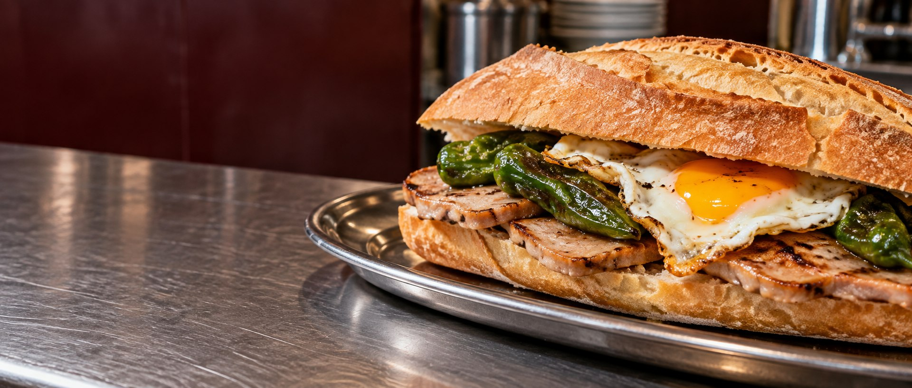
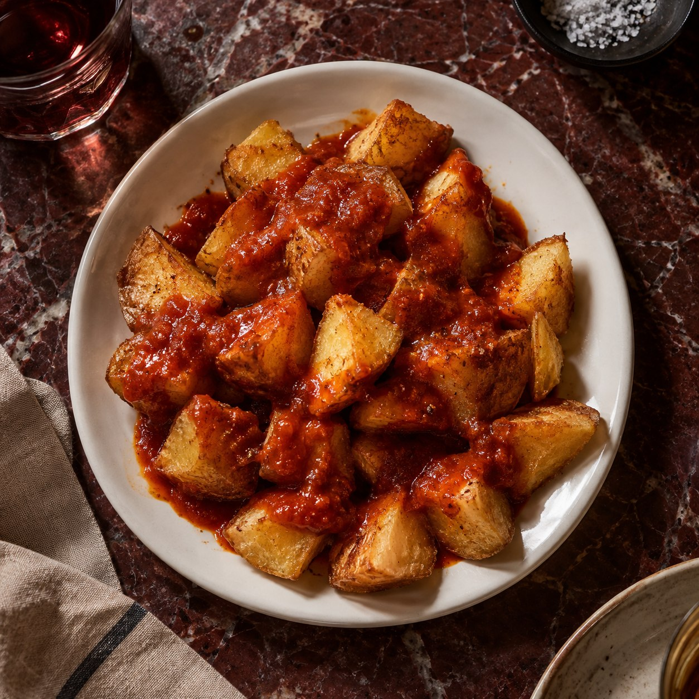
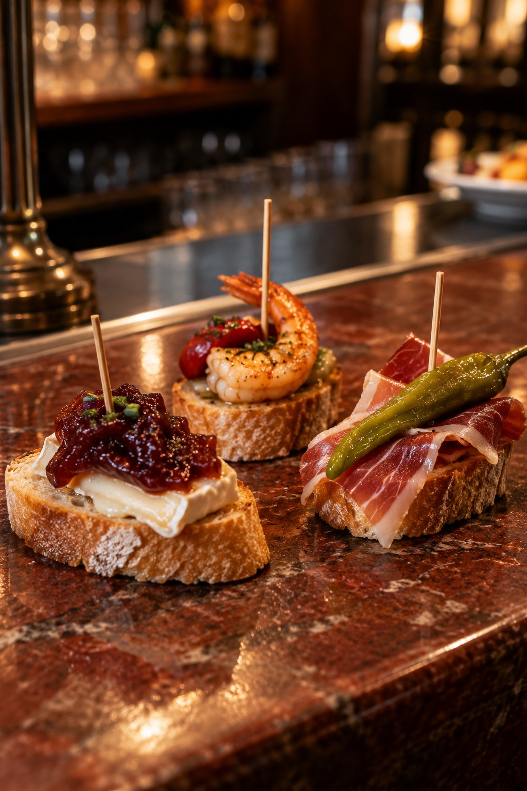

N.º 12BOCADILLO ELABORADO
Ternera
guisada
Con setas y salsa tártara.

BOCADILLOS EN LOGROÑO · LABRADORES 16
Más de cien formas de quedarse a cenar. Bocadillos, raciones y pinchos hechos para repetir.
01 / UN CLÁSICO DE LOGROÑO
UN SOLETE DE GUÍA REPSOLHay noches que empiezan con “solo un bocata” y terminan pidiendo otra ronda. En Tío Tito llevamos el espíritu de bar de barrio a lo grande: una carta larguísima, platos para compartir y una mesa siempre a mano en Labradores.
Bocadillos fríos y calientes
Carta para todos, también sin gluten
Días de pincho pote*
*El local anuncia pincho pote todos los días. Consulta los detalles al llamar.

02 / TAMBIÉN PARA COMPARTIR
La carta no se acaba en el pan. Patatas bravas, huevos, ensaladas y raciones para que la cena dure lo que tenga que durar.
Ver raciones y clásicos04 / VEN COMO ERES, PIDE LO QUE QUIERAS
Tío Tito anuncia que toda su carta está disponible sin gluten y es socio de ACERI, la Asociación Celíaca de La Rioja.
Si tienes celiaquía o alguna alergia, habla con el equipo al pedir para que te expliquen las opciones y su preparación.
Consúltanos por teléfono05 / UN PLAN SIN MUCHA VUELTA
Una barra, algo rico y tiempo para ponerse al día. El pincho pote forma parte de cada día en Tío Tito.
Explora los pinchos
LA BARRA SIEMPRE LLAMA06 / NOS VEMOS EN LOGROÑO
Pásate a cenar, pide para llevar o llámanos para preguntar por el servicio a domicilio.